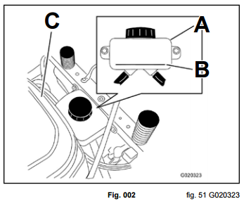

Hydrostatic Drive Exploded View
- A. Lug nuts - 80 ft-lbs. (108 Nm)
- B. Center support - apply Loctite (R) 242 - 17 ft-lbs. (23 Nm)
- C. Front hydro mount - 17 ft-lbs. (23 Nm)
- D. Rear hydro mount - 17 ft-lbs. (23 Nm)
- E. Outside hydro mount - 17 ft-lbs. (23 Nm)
- F. 30 ft-lbs. (40 Nm)
Hydro-Gear ZT-3100 Hydrostatic Transaxles

| Lubrication | Toro HYPR-OIL (R) 500 or 20w50 Engine Oil |
|---|---|
| Oil Capacity ZT-3100 | 77.23 fl. oz. (2284ml) each (not including reservoir tank or hose volume) |
| Oil Level Check | Check expansion reservoir and if necessary add the specified oil to the FULL COLD line. See illustration below. Also see the Hydro-Gear ZT-2800 / ZT-3100 Service manual (BLN-52441). |
| Fluid Change Interval | After the First 50 hours - Change the oil and filters for the hydraulic system and bleed the system. Every 400 hours - Change the oil and filters for the hydraulic system and bleed the system. |
Checking the Hydraulic Oil Level
- A. Expansion reservoir
- B. Full cold line
- C. Engine
Neutral Adjustment
Note: Do not make nuetral adjustments on cold hydrostatic drive systems. Safely warm the drive system before making adjustments.
- Safely raise and support unit so rear wheels are off the ground.
- Unplug the seat switch and install a jumper wire across the harness terminals (Fig. 060).
- Safely start the engine and run at full RPM.
- Verify the motion control handles are in the outward eutral position.
- Release the parking brake and observe rear tire movement. If the tire is creeping in either forward or reverse, a neutral adjustment is required (Fig. 061).
- Turn the engine off.
- Remove the appropriate control cover (A) (Fig. 062).
- Turn the adjustment nut (B) clockwise or counter-clockwise until the tire has stopped rotating OR has only a slight creep in reverse (RH side down).
- Safely start the engine and run at full RPM.
- Stroke the control handles in forward and reverse. Move the control handles into the neutral position and verify the rear wheels do not rotate forward or reverse.
- Readjust neutral setting if required.
- Turn engine off.
- Install the control cover(s) and torque the fastener to specification - 5 ft-lbs. (7 Nm).
- Remove the seat switch bypass jumper wire and reconnect the seat switch harness connection.
- Safely lower the unit and verify proper drive system function.
Note: Jumping the seat switch is for testing / adjustment procedures only.
Note: A slight amount of reverse creep is acceptable.
Note: If the tire is creeping in forward, turn the adjustment nut counterclockwise, (loosen the nut) (Fig. 063) (RH side down).
Note: A slight amount of reverse creep is acceptable.
Forward Tracking Adjustment
Note: Always adjust the neutral setting before the tracking adjustment.
Note: Do not make tracking adjustments on cold hydrostatic drive systems. Safely warm the drive system before making adjustments.
If the unit tracks or pulls to the RIGHT:
- Remove the LH side control cover.
- Turn the LH adjustment nut 1 full turn CLOCK-WISE (tightening the nut).
- Test drive unit and verify tracking.
- If unit still pulls to the right, repeat steps 2 and 3 until unit tracks straight.
- Install the LH control cover and torque the fastener to specification - 5 ft-lbs. (7 Nm).
If the unit tracks or pulls to the LEFT:
- Remove the RH side ontrol cover.
- Turn the RH adjustment nut 1 full turn CLOCK-WISE (tightening the nut).
- If unit still pulls to the right, repeat steps 2 and 3 until unit tracks straigt.
- Install the RH control cover and torque the fastener to specification - 5 ft-lbs. (7 Nm) (Fig. 064) (RH side shown).